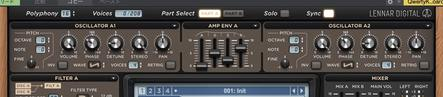
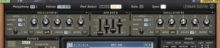
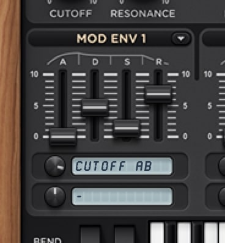
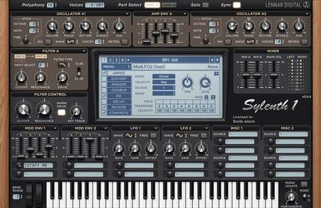

こんにちは、DTM班3回生のSmile stormと申します。明るい曲をよく作っている傍ら、Adobe製品を触ってはヒイヒイ言いながら課題をしております。
今回は、
(5日目の心太くんに続き、21日目にして2回目の)
真面目なDTMの話をしようと思います。
皆さんは『音作り』という言葉を知っていますか？
DTM班の方、特にクラブ系の曲を作る方は知っている、または行なったことがあると思います。意味は言葉の通り、音を作ることです。
今回はソフトシンセを用いた音作りについてお話ししようと思います。
そもそもなんで『音作り』をするの？
ここまでのほんの少しの話を聞いて、「そんな面倒なことをしなくても、既に用意されている音(プリセット)を使えばいいじゃん？」と思う方はいると思います。 もちろん音作りは時間がかかるし、手間がかかるし、もう完成されているプリセットの音を使った方が作業は早いです。 私も大半はプリセットの音をそのまま使ったり、少しだけ調整して使ったりしています。 しかし、プリセットに自分の使いたい音が無いこともあります。そして、 その音が、作っている曲のジャンルには欠かせない音だったり、自分が作っている曲で必ず使いたい音だったりします。そんなとき、 自分で音を作ろう と思います。私は。 といっても作りたい音の知識がそんなにあるわけではない私は、YouTubeで調べて見ては真似て作ることがよくあります。 そうやって音を作って、自分の理想の音に近づくと、嬉しくなります。こういう勉強もたぶん大事です。
…ここまで長々と前置きをしましたが、ここからが本題です。
今回は
(3回目)
、『Pluck』と呼ばれる音を実際に作ってみましょう！
この音は、様々なジャンルで使われている音ですし、応用が利きますので、覚えておいて損はないと思います。
私がよく使うソフトシンセがSylenth1
なので、とりあえずSylenth1を用いて説明します。
他のシンセを使っている方は…申し訳ありませんが、脳内でいろいろ変換してください……。きっと同じようなことが他のシンセでも出来るはずです…。
Pluckとは、直訳すると
〔指などで弦を〕つま弾く、かき鳴らす
出典：pluckの意味・使い方｜英辞郎 on the WEB：アルク
という意味があります。つまり、ピアノやギターといった弦楽器のように、アタック感のある音のことを指します。
どんな曲にこの音が使われているかというと、多くのジャンルの曲で使われています。個人的にはProgressive Houseと呼ばれるジャンルの曲で使われているのが印象的です。いくつか参考に曲を載せますね。
ここからは、Sylenth1を用いたPluckの作り方を説明します。 Sylenth1は139ユーロ(日本円で18,000円ほど)と高価なシンセですが、私が一番使い慣れているシンセで説明しやすいので許してください…。
あっ、なんと今クリスマスセールでSylenth1が30%OFFで買えるみたいですよ！ スゴイ！！ 詳しくはこちら
…話を戻して。時間のある方は、まず以下の動画を見ていただくと、大体分かるor何してんのか全然分からん！！！となると思いますので、ぜひご覧ください。(無編集で見辛くてごめん…！！)
それでは、解説していきます。
まず、Sylenth1を起動します(当たり前)。今回は説明の都合上最初からノート(音の音程や長さ)が打ち込まれていますが、どのタイミングで音作りをしてもいいし、いつ修正しても構いません。 次に、真ん中のディスプレイみたいなところに表示されている『MENU』を押して、『Preset → Insert』の順に選択します。すると、設定が初期状態の新しいプリセットが作成されます。これで、一から音作りをすることができるようになりました。

上部にあるこの部分ですね。Oscillatorは、音を作るための元の音を生成します。
今回はSaw波(ノコギリ波)を使いたいので、WavesからSawを選択します。Voicesで波形の数を増やします。
Detuneで音の高さをほんの少しずらします。すると、少し太く柔らかい音になったと思います。
今回は少し尖った音を使いたいので、Detuneは少しだけ動かします。
Phaseは波形の開始点をずらします。
(今Sylenth1のマニュアルを見ながら書いてるのですが、これRETRIGがオンになってないと機能しないんですね…。オフの状態のまま音作ってたから、つまみいじった意味無いやん……。)
おっとここで慌てるようにOscillatorの上にあるPolyphonyをいじり始めましたね！(忘れてました) Polyphonyは、同時に鳴らせる音の数の最大数を設定できます。0だったら一生音が鳴らないし、 1だったら和音を重ねても1つしか音が鳴らないし(メロディの音を作るとき、これがたまに重宝する)、 16だったらたくさん同時に音が鳴ります。今回はたくさん音が鳴って欲しいので、16にしちゃいます。
さて、Polyphonyをいじる前までは、Oscillator A1の設定をしていましたが、A2でも同じように設定をして、音の厚みを増やします。 ここで、A1とA2のDetuneを少しずらすと、さらに音の厚みが増しながら、まとまりのある音にでき(る気がし)ます。音作り、「気がする」も大事(たぶん)。
次にAMP ENVを設定します。 ここで設定できるのは、Attack「ノーツの始め(鍵盤を押したとき)の、音量0の状態から音量が最大になるまでの時間」、 Decay「音が最大になってからSustainで設定した音量になるまでの時間」、 Sustain「Decayの終わりからノーツの終わり(鍵盤から指を離したとき)までの間の音量」、 Release「ノーツの終わりの、Sustainで設定した音量から音が完全に無くなるまでの時間(余韻の長さ)」の4つです。 画像を見た方が理解が早いと思うので、ADSRでググろう！！

そのあと、低音を増すためにOscillator B1でOctaveを下げてSaw波を鳴らし、ちょっときらびやかさを出すためにOscillator B2で小さくノイズを鳴らしました。AMP ENV BはAのコピペです。

ディスプレイみたいなやつの左にあるのがFilterです。これは、エフェクターのフィルターと一緒で、音の音域をカットするものです。
まず、今回はFilter Aしか使わないので、Filter BのInput SelectをNo Inputにし、Filter AのInput SelectをOscillator A・B両方にします。そして、高音をカットするフィルターを使いたいので、Filter Typeを低音を通すLowpassにします。すると、音がこもりました。
Sylenth1では、Filter AとFilter BのCutoffとResonanceを、下のFilter Controlで同時に変えることができます。今回はFilter Aしか使ってませんのでFilter AのCutoffを使ってもいいのですが、特に意味無くこちらのCutoffを使います。 Cutoffでは、音域をカットする境目になる周波数を設定します。それを最小まで回すと………あっ、カットしすぎて音が無くなっちゃいました…。
しかし！ ここからあることをすると、音に驚きの変化が…。FilterのCutoffが大活躍します！！
Filter Controlのさらに下にある、MOD ENV。なんとも一言で説明しづらい部分なので、動画の解説をしながら説明していきます。
まず、下のつまみの横にあるミニディスプレイを押して、Cutoff ABを選択します。このCutoffは、Filter A・B両方のCutoffのことです。 もちろん、FilterAしか使ってないので、Cutoff Aだけでも大丈夫です。
次に、………。あれっ！？ さっきAMP ENVで出てきたADSRがここにもあるよ！？！？ これが大事なんです。動画内でADSRをいじっていると、音がさっきと大きく変わり、ただこもっている音からポンポン鳴る音になりました。スゴイ！！ 一体何をしているかというと、AMP ENVのときに音量がADSRに従って変わるのが、MOD ENVではミニディスプレイで選択したつまみ(今回はCutoff)がADSRに従って変わるんです！！ ちなみにミニディスプレイの横にあるつまみは、ADSRの最小から最大までの動く幅を変えることができます。
やりました！ これであなたはもうPluckを作ることができるようになりました！！ このポンポンしている音がPluckです。また、動画の5:04からFilter ControlのCutoffを動かしているのですが、ここを動かすと音がどんどんハッキリ聴こえるようになって、メリハリをつけることができるのが、この音のもう1つの特徴でもあります。
覚えることは意外と少ないし、何より真似するのが簡単なので、音作りの最初の一歩には向いていると思います。是非、実践してみましょう！！！
ん？ 5:24から何をしているのかって？ ここからもう少し、私の理想の音に近づけるための細かい調整をしています。簡単にさらっと説明します。
5:24… MOD ENV 2でPitch AB(音の高さ)を高速で動かし、アタック感を少し増やす。
6:04… Warm Driveをオンにすると、倍音が増えて音に厚みが増える…らしい。
6:51… 音がギターのように歪まない程度にDistortionをかけて、きらびやかさを増やす(増えてる気がする)。
7:30… EQ(Equalizer)で低音を少し、高音をそこそこ大きくする。
8:30… Reverbをかけて、お風呂やコンサートホールのような残響をつける。
9:34… より細かい設定ができるEQ(Studio One付属)を使って余分な音(人が聞き取れない部分や曲に必要のない部分)をカットする。
10:33… Compressor(WAVESのH-Comp、少し前のサーバーマンデーで無料配布してた)を使って、アタック感と異なるCutoffの音量バランスの調整。
12:04… オートメーションでFilter ControlのCutoffを選択し、曲が再生されている間にCutoffが勝手に変わるようにする。
13:06… ↑オートメーションに従ってFilter ControlのCutoffが変わっているのが分かる。
13:38… 諸々調整。
14:50… Stereo Imager(iZotopeのOzone Imager、無料で使える)で音の左右の広がりを大きくする。
15:23… 他の音と合わせながら諸々調整。
という感じです。余計なことしすぎて動画が20分にもなってしまった。
この記事のために作っていた曲は、明日(22日)のDTM班の討論会を経た後に追記という形で載せようと思っています。(ごめんSBくんとネ管長)
他のジャンルでもPluckは使えるとお話ししましたが、その一例を載せます。

これは私の楽曲『Heart-Shaped Chocolate』という曲で使われている音のSylenth1の画面です。一応Oscillator B1には1オクターブ上のSaw波が鳴ってます。 実はさっきまで作ってた音とそんなに変わっていないんです。でも、疾走感のある曲にピッタリの、疾走感のある音になってると思います。 変わっているポイントというと、Voicesを増やして音の厚みを増していることと、AMP ENVのSustainが高めになっていて、FilterのCutoffが高いときの音があまり減衰しないようになっていることというくらいです。
この音だけを抜き出したのが、↓これ↓です。
いかがでしたか？ ここまでめちゃくちゃ長い文章とめちゃくちゃ長い動画にお付き合いいただき、ありがとうございます。 音作りは、曲にその人の個性が表れるようになったり、制作する曲の幅を広げたりできます。その第一歩を、この記事でアシストできていたら、私は嬉しいです。
それでは、残りわずかのソフメアドベントカレンダー、最後まで楽しみましょう！ 以上、Smile stormでした。